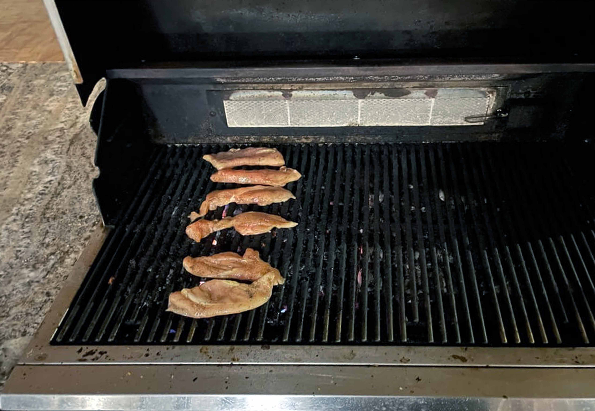

Cooking Chicken
Written by Taylor Porter - 11/21/2024
Cooking raw chicken for the first time can be a bit scary. For me, it was a step away from the world of boxed mac and cheese and ramen and a step into the world of cooking. There's a lot to think of when it comes to raw meat, so hopefully this article will give you the confidence you need to be a chicken champion!
Defrosting
One thing I have learned is that you need to plan your meals ahead of time, so you can give frozen meat the time to defrost. When I took my chicken out of the freezer, it was rock solid, so separating it was a bit of a challenge. My roommate suggested that I separate my chicken after I buy it, which definitely comes in handy. I ended up having to leave it in the fridge for a few hours so I could pry it apart with a fork.
There are many ways to defrost meat, but one of the easiest ways is to put the meat in the fridge at least 24 hours before using it. If you’re short on time or your meat didn’t thaw completely, you can always use the defrost setting on the microwave or submerge the bag of meat in cold water for up to an hour. Don’t leave the meat out at room temperature to thaw, as that can lead to bacteria growth. Always make sure that the meat still remains cold while it’s defrosting!
Food Safety
Preparing food safely is an essential skill to learn to prevent illness, especially when you’re handling meat.Touching raw chicken can be a weird feeling, but if it makes you want to wash your hands, then great! Always wash your hands before and after cooking and after touching raw meat to get the slime off your hands and prevent the spread of bacteria. It’s also important that you prevent cross-contamination by using separate dishware for raw meat and thoroughly washing anything that comes in contact with it. In addition, my roommate taught me not to wash the raw chicken because it spreads pathogens and bacteria everywhere. Handling raw meat for the first time can be intimidating, but as long as you take extra care to prepare your food safely, you should be just fine. For more information on food safety, visit foodsafety.gov
Cooking
Before I cooked the chicken, I cut it in half vertically to get a thinner cutlet that cooks through easier. I seasoned my chicken with salt, pepper, and garlic, getting that nice flavor. Luckily, my apartment has some grills, but you can also sear the chicken in a pan or bake it in the oven. I let the chicken sit until the bottom had some nice grill marks, and flipped it over. If you have a food thermometer, use that to check the thickest part of the chicken. If it reads 165 or over, then you're good to go! Otherwise, just cook it until you can easily cut through the chicken with a knife.
Results
Overall, I would say the chicken turned out pretty well! The first time I did this, I overcooked the chicken, leaving it a bit tough. Luckily this time I got some juicer slices, and the flavors of salt, pepper, and garlic went together very nicely. You should definitely give this a try, even if it’s a bit intimidating. You’ve got this, just remember to be smart with your food safety!